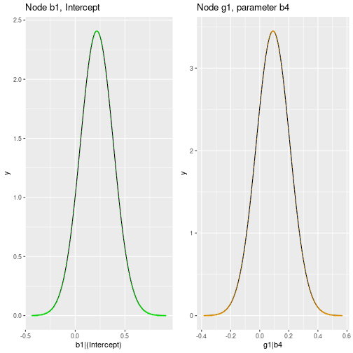

In this vignette, we will discuss the parameter learning in the
context of additive Bayesian network modelling with the package
abn.
Background
In the context of additive Bayesian network (ABN) modelling, parameter learning refers to the process of estimating the parameters of the graphical model. The parameters of the model are the coefficients of the linear regression models that are used to model the conditional probability distributions of the nodes in the network. They are estimated using the data that is available for the nodes in the network.
Fitting an ABN model
The fitAbn() function is used to estimate the parameters
of an ABN model. In principle, we need the data and a directed acyclic
graph (DAG) that specifies the structure of the network. These, together
with additional arguments, are provided by an object of
abnLearned to fitAbn() which will then
estimate the parameters of the model. This process is illustrated in the
vignette("01_quick_start_example").
Alternatively, with fitAbn() we can fit the parameters
to a manually specified DAG. In this case, we need to provide the data,
its distributions and the DAG as arguments to fitAbn():
# Load an illustrative subset of the example data
mydat <- ex0.dag.data[,c("b1","b2","b3","g1","b4","p2","p4")]
# Specify the distributions of the nodes
mydists <- list(b1="binomial",
b2="binomial",
b3="binomial",
g1="gaussian",
b4="binomial",
p2="poisson",
p4="poisson" )
# Define a DAG
mydag <- matrix(data=c( 0,0,1,0,0,0,0, # b1<-b3
1,0,0,0,0,0,0, # b2<-b1
0,0,0,0,0,0,0, #
0,0,0,0,1,0,0, # g1<-b4
0,0,0,0,0,0,0, #
0,0,0,0,0,0,0, #
0,0,0,0,0,0,0 #
), byrow=TRUE,ncol=7)
colnames(mydag) <- rownames(mydag) <- names(mydat)Fit the model to calculate the log marginal likelihood goodness of fit:
myres.c <- fitAbn(dag = mydag,
data.df = mydat,
data.dists = mydists,
method = "bayes")
plot(myres.c)
Examine the parameter estimates
We can examine the parameter estimates with the print()
method for the class abnFit
print(myres.c)
#> The ABN model was fitted using a Bayesian approach. The estimated modes (the highest posterior density values of the parameters) are:
#>
#> $b1
#> b1|(Intercept) b1|b3
#> 0.217 -0.164
#>
#> $b2
#> b2|(Intercept) b2|b1
#> 0.0286 0.0465
#>
#> $b3
#> b3|(Intercept)
#> 0.0267
#>
#> $g1
#> g1|(Intercept) g1|b4 g1|precision
#> -0.0494 0.0915 1.0054
#>
#> $b4
#> b4|(Intercept)
#> 0.16
#>
#> $p2
#> p2|(Intercept)
#> 2.34
#>
#> $p4
#> p4|(Intercept)
#> 2.32
#>
#> Number of nodes in the network: 7or by looking at the coef slot of the
abnFit object returned by fitAbn():
Examine the marginal posterior densities
Furthermore, we can examine the marginal posterior densities of the parameters. This is useful to assess the uncertainty in the parameter estimates and to check if the model is overfitting the data.
Now fit the model with compute.fixed=TRUE to calculate
the marginal posterior distributions for all parameters:
myres.c2 <- fitAbn(dag = mydag,
data.df = mydat,
data.dists = mydists,
method = "bayes",
compute.fixed=TRUE)The marginals slot of the abnFit object
returned by fitAbn() contains a list of all marginal
posterior densities. We can plot some of the marginal posterior
densities to assess the uncertainty in the parameter estimates:
library(ggplot2)
library(gridExtra)
df1 <- as.data.frame(myres.c2$marginals$b1[["b1|(Intercept)"]])
names(df1) <- c("x","y")
p1 <- ggplot(df1, aes(x=x, y=y)) +
geom_line() +
geom_point(shape = 43, color="green") +
labs(x="b1|(Intercept)", title="Node b1, Intercept")
df2 <- as.data.frame(myres.c2$marginals$g1[["g1|b4"]])
names(df2) <- c("x","y")
p2 <- ggplot(df2, aes(x=x, y=y)) +
geom_line() +
geom_point(shape = 43, color="orange") +
labs(x="g1|b4", title="Node g1, parameter b4")
grid.arrange(p1, p2, ncol=2) Note that, by default, all
variables are standardized (centre = TRUE).